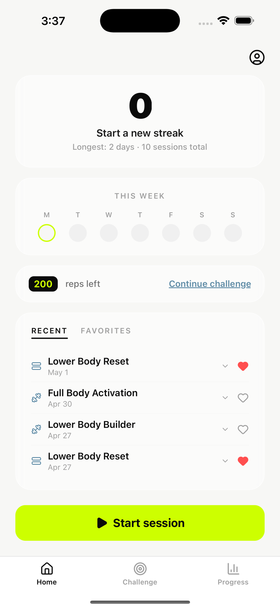
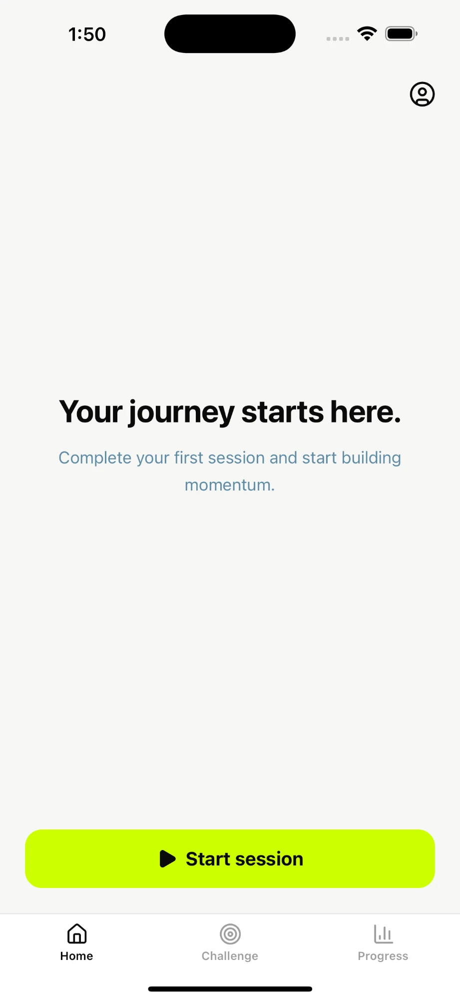
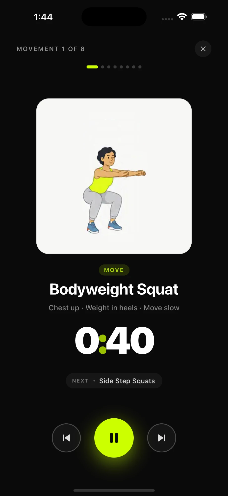
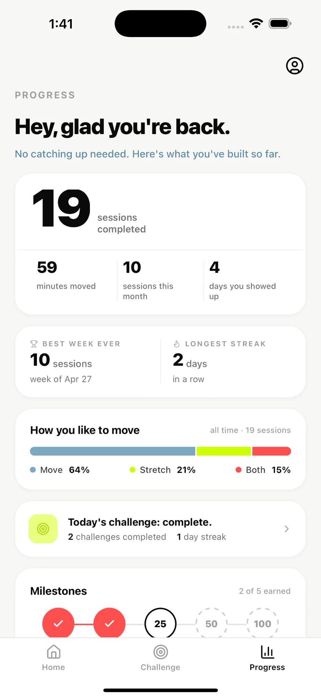

Built for the first two minutes, not the next personal best.
LowLift is a movement‑consistency app for the people the fitness category quietly loses — desk‑bound adults and ADHD brains who know they should move and can’t seem to start. Two‑to‑five‑minute sessions, built to make starting easier than avoiding. I found the bet, designed the anti‑shame system, and shipped it to the App Store solo — research, design, and code — in four months.

The category loses this user on purpose.
Open any top‑grossing fitness app. Day 1 is a 45‑minute HIIT. Day 2 is a heavier 45‑minute HIIT. There is no Day 0.
The “easy” tier still isn’t easy.
The category’s gentlest plan is a 30‑45 minute session that assumes you can hold a plank. Anyone deconditioned and desk‑bound bounces in week one — and blames themselves, not the program.
Streaks punish the user I build for.
Streaks are the category’s default retention engine. For ADHD adults they backfire: rejection‑sensitive, all‑or‑nothing thinking means one broken streak triggers shame that outweighs every win — so they quit.
The sharpest wedge is the one nobody fights for.
I scored seven audiences across five dimensions. ADHD adults (21/25) and desk‑bound, work‑from‑home folks (20/25) won — intense, daily pain that an ultra‑short mechanic is built for, in a space no incumbent owns.
Before writing a line of code, I scored seven candidate audiences 1–5 across five dimensions. The wedge wasn’t a hunch — it was the top of a ranked list, and the two winners share enough behavior to serve with one product.
| Audience | Demand | Market | Gap | Feasible | Economics | Total |
|---|---|---|---|---|---|---|
| ADHD adults WEDGE | 5 | 4 | 4 | 4 | 4 | 21 |
| Desk‑bound / WFH RIDES ALONG | 4 | 5 | 3 | 5 | 3 | 20 |
| Busy parents | 4 | 5 | 2 | 3 | 4 | 18 |
| Fell‑off fitness | 3 | 5 | 2 | 2 | 3 | 15 |
| Over‑40, health‑prompted | 3 | 4 | 3 | 2 | 3 | 15 |
| Chronic pain / mobility | 5 | 3 | 2 | 1 | 4 | 15 |
| Students / early‑career | 3 | 4 | 3 | 3 | 2 | 15 |
Four months. No agency. No committee.
Talk to the people the category keeps losing.
Not fitness enthusiasts — the people who keep bouncing. ADHD adults, desk‑bound remote workers, serial app‑quitters, recruited from r/ADHD and remote‑work communities. Recorded 40+ conversations, then tore down exactly how the whole category fails them.
- 40+ user interviews
- 7 audiences scored × 5 dimensions
- Six‑failure‑mode retention teardown
Pick a brutal principle, then defend it.
“Make starting easier than avoiding.” Wrote it on the wall. Every feature I cut, I cut against that line. The hardest cut was streaks — the category’s #1 retention engine, proven to work and proven to wreck the ADHD user the day it breaks. I killed it on purpose. Sessions ship at 2‑5 minutes. No leaderboard. No before/after photos.
- One‑line principle: make starting easier than avoiding
- Anti‑feature list
- Cut onboarding entirely
Ship rough, then make it gentle.
Two‑week sprints, end‑to‑end. React Native (Expo) + Supabase. Sessions are 2‑5 minutes of timed coaching text — the emotional UX lives in the words, not a separate feature. A closed cohort from the original interviews got early builds and a standing feedback loop. Many rounds of copy edits. More rounds of removing things.
- Closed cohort feedback loop
- Sessions: Move / Stretch / Both
- Cut hard, shipped lean
Open the door, watch the floor.
Soft launch. No paid acquisition — just the original cohort sharing with friends who’d “tried apps before and bounced.” The support inbox started telling me what to build next. Still iterating weekly.
- Public launch · April 2026
- Weekly release cadence
- Roadmap from the inbox
What other apps do vs. what LowLift does.
Every meaningful choice in LowLift inverts a category default — and each one maps to a documented reason the category loses this user. Six of them.
Inversions, by design.
// LEFT: WHAT THE CATEGORY SHIPS — RIGHT: WHAT WE SHIP, AND WHY
Three moments that earn the user’s trust.



The bar I’m holding myself to.
LowLift launched a month ago. Too early for a real retention read — so here’s the bar I set on day one, why each number is defensible against published benchmarks, and the signal I’m watching. Targets I’m tracking against, not results I’m claiming.
I built LowLift for the person who downloads a fitness app on Sunday and has deleted it by Thursday. The whole product is one idea — make starting easier than avoiding. If a session ever makes you feel behind, it failed.
What I’d do differently next time.
- A principle sharp enough to cut with“Make starting easier than avoiding” wasn’t a tagline, it was the kill criterion. Every feature debate ended at the same wall, so decisions were fast and scope stayed honest.
- A contrarian bet, made on evidenceI bet against streaks — the category’s most-copied retention tool — because the research said they wreck my exact user. Conviction from data, not consensus.
- Solo, end-to-endFinding the bet and building it lived in one head. No translation loss — I could feel a bad flow in code the same day I specced it.
- I instrumented last, not firstLight on analytics at launch, so my early read came from the support inbox, not the funnel. Fixing it → wiring event tracking across the first-session funnel — open → session start → first movement → completion — so the next cohort is measured at the exact drop-off point instead of guessed at.
- I solved “easy to start,” not “want to return”The retention bet still leans on the prompt — nothing yet makes you open LowLift on your own. Fixing it → prototyping a pull layer: a weekly progress story worth checking, and a 10-second before/after mood check-in that builds a private narrative you come back for.
- I hedged the positioning at firstI treated “ADHD” as a market-narrowing risk and kept the early framing generic. My own analysis said the opposite — it’s the sharpest, most defensible wedge, and it comes with built-in community distribution. Fixing it → leaning the messaging explicitly into ADHD movement — r/ADHD, ADHD creators — where this user actually is.
The throughline: I can find a sharp bet and ship it solo. What I’m sharpening now is the follow-through — measure the funnel, commit to the wedge, and earn the return, not just the start.